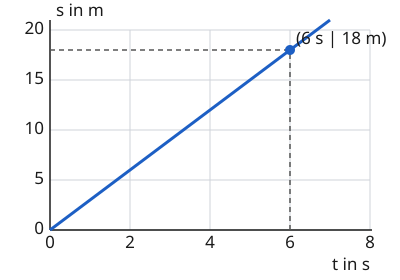

Das Weg-Zeit-Diagramm
Mit einem KI-Tutor lernen
Ein KI-Tutor erklärt dir diese Seite und hilft dir bei den Übungen. Wähl deinen Assistenten:
Mit Claude öffnen Mit ChatGPT öffnen Mit Mistral Vibe öffnen
Du nutzt dein eigenes Konto beim Anbieter. Der Assistent ist kein Angebot von lernapps.net: lernapps liefert nur Inhalte und Übungen. Die Wahl gilt für alle Seiten, nur auf diesem Gerät.
Eine Fahrt als Linie
Du kennst aus Klasse 7: Wer in 4 Sekunden 20 Meter fährt, hat 5 m/s. Aber was ist, wenn die Fahrt aus mehreren Teilen besteht? Erst fährst du los, dann stehst du an der Ampel, dann fährst du weiter. Dann hilft ein Weg-Zeit-Diagramm: Es zeigt die ganze Fahrt als eine Linie. Auf den folgenden Seiten fährt immer ein Wagen auf einer geraden Bahn. Fährt er gleichmäßig, dann ist er die ganze Zeit gleich schnell.
So liest du das Diagramm
- Weg-Zeit-Diagramm
Ein Diagramm, in dem waagerecht die Zeit und senkrecht der Weg vom Startpunkt steht. Jeder Punkt der Linie, des Graphen, sagt, wie weit der Wagen nach dieser Zeit vom Start entfernt ist.
Waagerecht steht die Zeit in Sekunden, senkrecht der Weg in Metern. Der Weg ist hier immer die Entfernung vom Startpunkt der Bahn. Die Linie im Diagramm heißt Graph. Sie ist nicht das Bild der Strecke, auf der der Wagen fährt. Sie zeigt nur: Nach so vielen Sekunden ist der Wagen so weit vom Start weg.
Achte auf die Steigung, also darauf, wie steil der Graph ist. Je steiler, desto mehr Weg kommt in derselben Zeit dazu, desto größer ist die Geschwindigkeit. Ein waagerechter Graph heißt: Es kommt kein Weg dazu, der Wagen steht. Geht der Graph nach unten, wird der Weg kleiner: Der Wagen fährt zum Start zurück.
Stelle eine Fahrt ein
Unten siehst du oben die Bahn mit dem Wagen. Sie ist 100 m lang, so wie die senkrechte Achse des Diagramms: Wo der Wagen auf der Bahn steht, so groß ist der Weg . Darunter ist das Diagramm. Die Fahrt hat vier Abschnitte von je 2 Sekunden. Mit den vier Reglern legst du fest, wie schnell der Wagen in jedem Abschnitt ist. Dein Graph entsteht sofort. Die Zahlen an den Achsen bleiben dabei gleich.
Die rosa gestrichelte Linie zeigt eine Zeit. Der rosa Punkt zeigt, wo der Wagen zu dieser Zeit im Diagramm ist. Mit „Start“ läuft die Zeit, und der Wagen fährt los. Mit dem Regler „Zeit“ stellst du eine Zeit selbst ein. Unter dem Diagramm steht, wie weit der Wagen dann ist und wie schnell. „Zurücksetzen“ stellt alles auf den Anfang.
Ein Regler unter 0 m/s heißt: Der Wagen fährt zum Start zurück. Er kann aber nie hinter den Start fahren. Darum lässt sich ein Regler nur so weit nach links schieben, wie der Wagen vor diesem Abschnitt Weg geschafft hat. Verschiebst du einen früheren Regler, kann sich ein späterer deshalb von selbst verschieben.
Probiere aus: Alle Regler stehen auf 5 m/s. Was für ein Graph ist das? Stelle dann Abschnitt 2 auf 0 m/s. Wie sieht der Graph dort aus, und wo steht der Wagen? Stelle Abschnitt 3 auf 10 m/s. Was ist anders als in Abschnitt 1? Stelle zuletzt Abschnitt 4 auf einen Wert unter 0 m/s.
Bei 0,0 s: Weg 0 m, Geschwindigkeit 5 m/s
Ein Weg-Zeit-Diagramm eines Wagens. Waagerecht die Zeit von 0 bis 8 s, senkrecht der Weg von 0 bis 100 m. Die Fahrt hat vier Abschnitte von je 2 s, in jedem fährt der Wagen mit 5 m/s. Der Graph ist eine gerade Linie: nach 2 s sind es 10 m, nach 4 s 20 m, nach 6 s 30 m, nach 8 s 40 m. Mit den Reglern ändert man die Geschwindigkeit je Abschnitt. Ein steilerer Abschnitt heißt: schneller, ein waagerechter: Stillstand, ein fallender: zurück zum Start.
Ein Punkt verrät die Geschwindigkeit
Ein Scooter fährt gleichmäßig

Der Punkt bei 6 s und 18 m ist markiert.
Quelle: eigene Zeichnung. Lizenz: CC-BY-4.0.Im Diagramm liest du den Punkt bei und ab. Der Graph ist eine Gerade vom Start aus, der Scooter fährt also gleichmäßig. Dann ist die Geschwindigkeit der Weg durch die Zeit:
Das ist die Steigung der Geraden: In jeder Sekunde kommen 3 m dazu. Ein steilerer Graph hätte eine größere Geschwindigkeit.
Übung
Übung
Drei Beispielaufgaben, jede mit ihrer Lösung:
Aufgabe Nr. 1
Ein Wagen fährt gleichmäßig. Sein Graph im Weg-Zeit-Diagramm ist eine Gerade vom Start aus. Du liest einen Punkt der Geraden ab: nach 7 s ist der Wagen 21 m vom Start entfernt. Wie schnell fährt der Wagen?
Tipp
Wie viele Meter kommen in einer Sekunde dazu?
Lösung
- Die Geschwindigkeit ist der Weg durch die Zeit: .
- Mit den Werten der Aufgabe: .
Richtige Antwort: 3 m/s
Aufgabe Nr. 2
Ein Wagen fährt gleichmäßig. Sein Graph im Weg-Zeit-Diagramm ist eine Gerade vom Start aus. Du liest einen Punkt der Geraden ab: nach 8 s ist der Wagen 40 m vom Start entfernt. Wie schnell fährt der Wagen?
Tipp
Wie viele Meter kommen in einer Sekunde dazu?
Lösung
- Die Geschwindigkeit ist der Weg durch die Zeit: .
- Mit den Werten der Aufgabe: .
Richtige Antwort: 5 m/s
Aufgabe Nr. 3
Ein Wagen fährt gleichmäßig. Sein Graph im Weg-Zeit-Diagramm ist eine Gerade vom Start aus. Du liest einen Punkt der Geraden ab: nach 3 s ist der Wagen 36 m vom Start entfernt. Wie schnell fährt der Wagen?
Tipp
Wie viele Meter kommen in einer Sekunde dazu?
Lösung
- Die Geschwindigkeit ist der Weg durch die Zeit: .
- Mit den Werten der Aufgabe: .
Richtige Antwort: 12 m/s
Übung
Lösung
von 0 bis 2 s
Hier steigt der Graph auf 12 m. Das sind 12 m in 2 s, also 6 m/s. Vergleiche das mit den anderen Abschnitten.
von 2 bis 4 s
Hier ist der Graph waagerecht. Es kommt kein Weg dazu, der Wagen steht.
von 4 bis 6 s richtige Antwort
Hier ist der Graph am steilsten, denn der Weg wächst um 20 m in 2 s. Das sind 10 m/s.
von 6 bis 8 s
Hier liegt der höchste Punkt, aber der Graph ist flacher als vorher. Es kommen nur 6 m in 2 s dazu, das sind 3 m/s.
Wie schnell der Wagen ist, zeigt die Steilheit des Graphen, nicht wie hoch er liegt. Im Abschnitt von 4 bis 6 s wächst der Weg am stärksten.
Mehr dazu:
Übung
Lösung
Richtige Antwort: Die Aussage stimmt nicht.
Ein waagerechter Graph heißt, dass der Weg nicht wächst. Der Wagen steht. Gleichmäßig schnell fahren zeigt eine gerade, schräge Linie.
Mehr dazu: